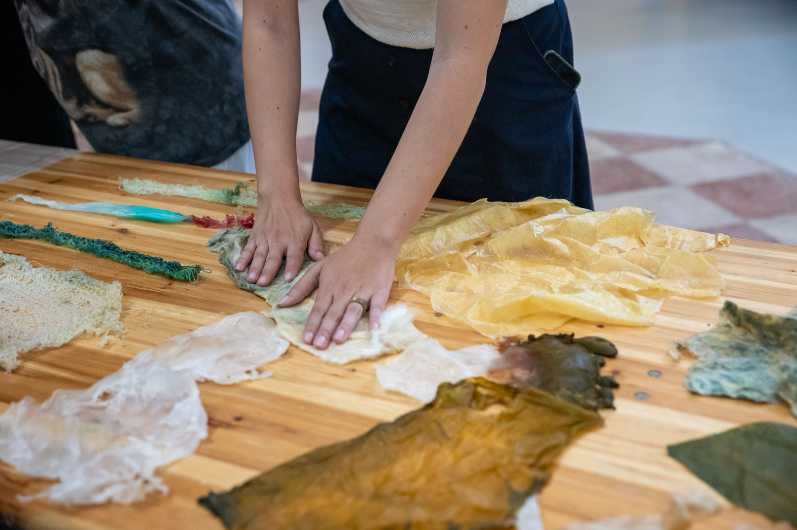
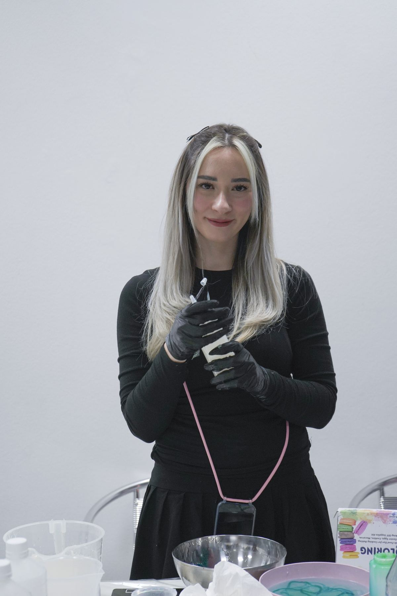
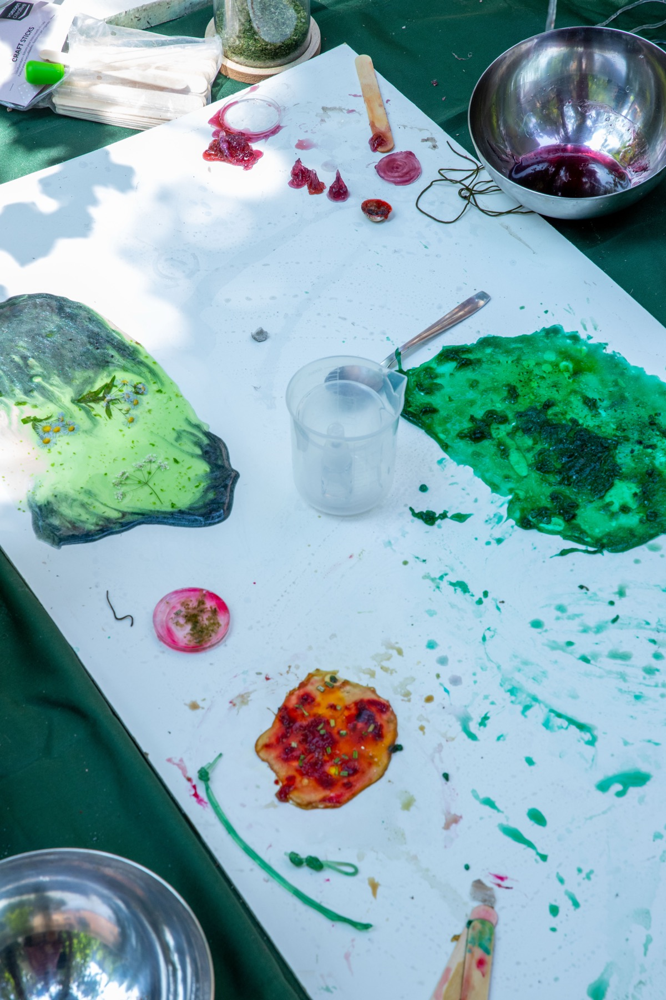
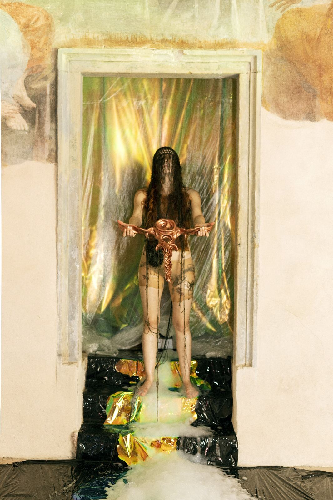
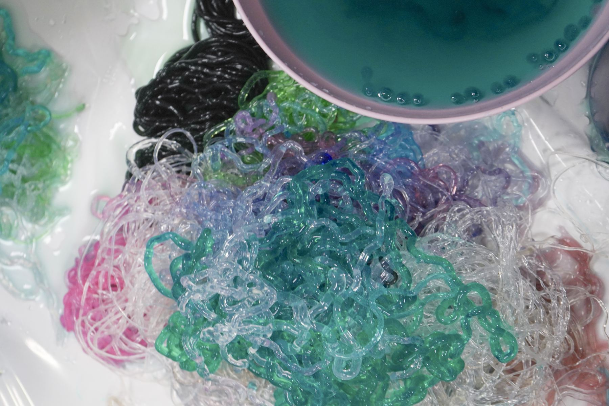

2025 · VeniceOcean Space
05 · About
Designer and researcher. I found my way into design through my hands and a material that transforms.

Bio to confirm
I am Carola Emanuela Godja, a designer and researcher. I found my way into design through my hands and a material that transforms, not through fabric.
I trained in Fine Arts, with a thesis already turned towards plant intelligence, then moved to Venice for a Master's degree in Fashion at Iuav University. There, seminars on living materials led me first to bacterial cultures, then to algae-based biopolymers.
My first threads, made with a basic recipe from molecular cooking, dried stiff and brittle, exactly like algae drying on the edge of the lagoon. Understanding that failure, instead of stopping there, is where the research began.
Today Emi BioLab works on one material in depth: alginate yarn. I share it through workshops, lectures and collaborations with artists and institutions, within a theoretical frame drawn from new materialism, Jane Bennett and Donna Haraway.
Curriculum to confirm
Teaching, lectures and workshops
Kent State University, Florence Program · Italy
A hands-on workshop introducing students to alginate-based yarn production, biotextile experimentation and material exploration through algae-derived biomaterials.
Iuav University of Venice · New Media and Fashion Communities Studio, led by Caterina Pecchioli, discussion by Clizia Moradei
Invited lecture on alginate as a reactive and situated material system, and on workshops and digital communities as spaces for material learning and exchange.
University of Illinois Urbana-Champaign x Tessitura La Colombina · Italy
A workshop for international students on algae-derived biomaterials and biotextile processes, in collaboration with Prof. Chiara Vincenzi.
University of Illinois Urbana-Champaign · USA
An independent research practice centred on biomaterials, situated design and lagoon ecologies.
Universidad ORT · Uruguay
Invited seminar on biomaterial experimentation, algae-based materials and design research practices.
TEDxVenezia, The Human Safety Net · Italy
A public workshop on biomaterials and nature-inspired design through hands-on material experimentation.
AWAi Association, Venice · Italy
A participatory workshop within the exhibition Hide and Seek, curated by Deborah Maurelli, on collective making and material experimentation.
Ocean Space / TBA21-Academy, Venice · Italy
A public workshop on biomaterials, lagoon ecologies and situated forms of knowledge production.
Fondazione Bevilacqua La Masa, Venice · with artist Camilla Dalmazio
A co-led workshop investigating biomaterials through embodied practices, collective experimentation and material inquiry.
Selected projects

2025 · VeniceOcean Space

2025 · Venicewith Camilla Dalmazio

2025 · VeniceAWAi

Collaborationdetails to add

Collaborationdetails to add

Berlinyear to add